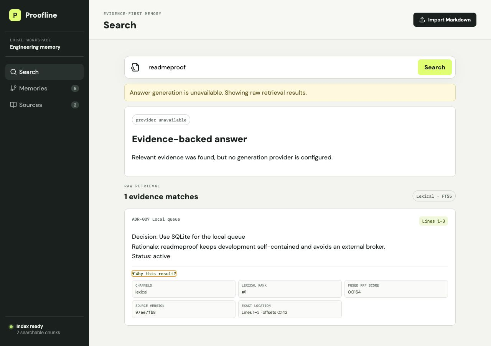

Immutable by design
Every edit creates a new source version. Historical citations keep resolving to the original content.
OPEN SOURCE · EXPERIMENTAL PRE-ALPHA · v0.14.13
Proofline turns local documents, notes, and Git history into decision memory. Every derived claim leads back to an immutable source version and its exact lines.
Local-first by default · External AI optional · No cloud account required
01Decision: Use SQLite for the local queue.
02Rationale: Keep development self-contained
03and avoid an external broker.
EVIDENCE-BACKED ANSWER
The queue uses SQLite to keep local development self-contained.WHY PROOFLINE
Architecture decisions fragment across repositories, notes, and model chats. Search finds text. Proofline preserves the evidence chain needed to trust an answer later.
Every edit creates a new source version. Historical citations keep resolving to the original content.
Answers, memories, study cards, and proposals retain source IDs, offsets, line ranges, and quote hashes.
SQLite, bundled web UI, deterministic retrieval, local backups, and optional model providers keep the offline core useful.
HOW IT WORKS
Import Markdown, text, registered folders, local Git repositories, or quick notes.
Index content against a stable identity without overwriting historical evidence.
Search decisions, rationale, contradictions, timelines, and learning material.
Open the exact source version, line range, and quote behind every generated section.
BUILT FOR INSPECTION
Proofline fails visibly into deterministic retrieval instead of inventing an uncited response. Provider settings stay behind interfaces, remote egress is explicit, and the source evidence remains inspectable.

EVIDENCE STUDIO
Generate locally and deterministically today. Every section still points to an immutable source version and exact source lines.
TRY THE LATEST PRE-RELEASE
The platform-aware launcher selects the application data directory, binds to loopback on a dynamic port, uses macOS Keychain by default, and opens the bundled interface.
Qualified on local macOS ARM64 as an installed Python wheel. Windows lifecycle, signed native installers, real-model quality, external pilot evidence, security qualification, and production support remain open.
python3 -m venv ~/.proofline-venv
~/.proofline-venv/bin/pip install \
https://github.com/thangldw/proofline/releases/download/v0.14.13/proofline-0.14.13-py3-none-any.whl
~/.proofline-venv/bin/proofline launchThen open the local URL printed by Proofline.
ENGINEERING DECISION MEMORY